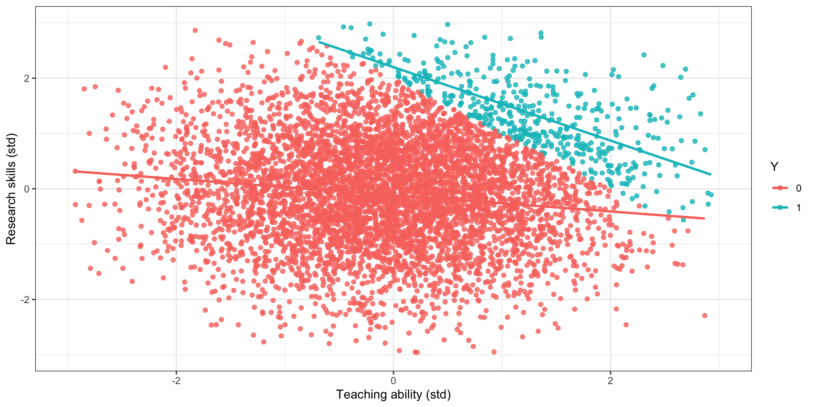
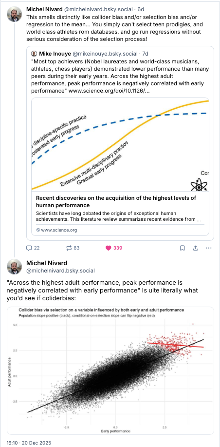
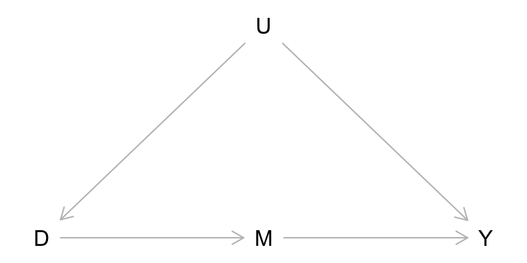
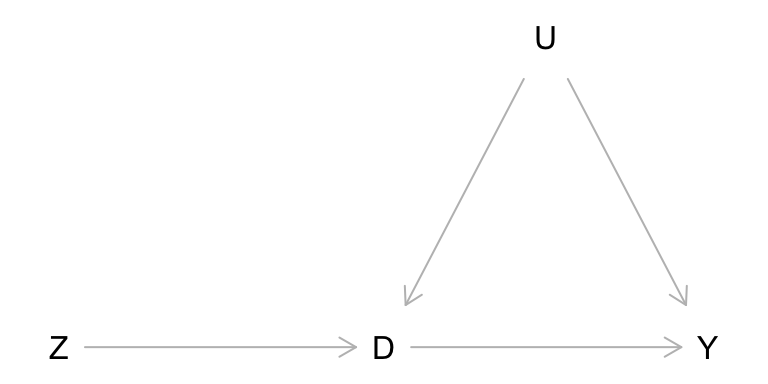
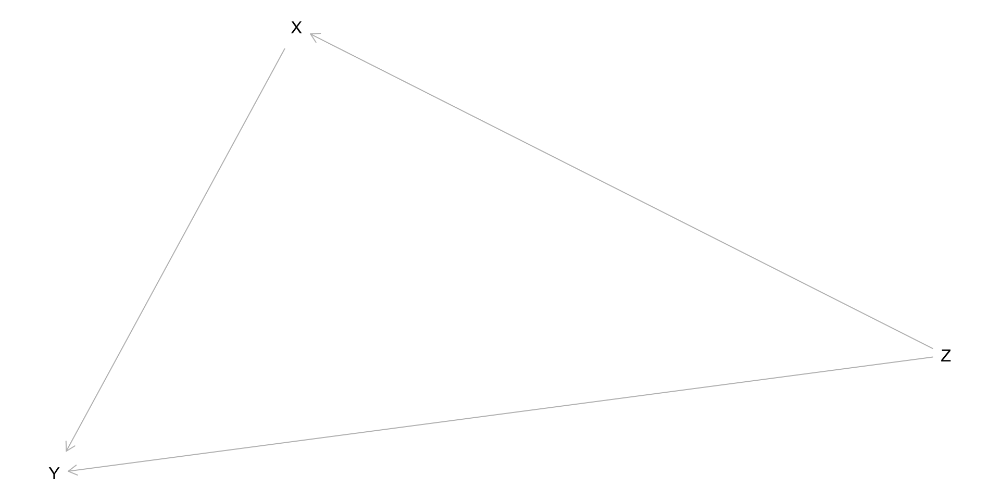

Graphical Causal Inference (DAG, SCM)
Ozan Aksoy
January 28, 2026
Recap from previous session
We studied the importance of using potential outcomes to:
clarify what do we want to know (estimand)
identify reasons for discrepancies between what we observe and our target (bias)
formalize what needs to be true for our estimand to be identified with a given estimator (assumptions)
We studied the role of randomisation to identify causal effects by design.
But what do we do when we have less than perfect experiments?
And how to assess our assumptions with observational data?
Lecture 2: From causal assumptions to causal models
When introducing potential outcomes, we emphasized that it is not the method what makes our results causal, but our assumptions
How to make assumptions visible and credible?
Be explicit about our model, i.e., our beliefs about how a system of our interest works
Here we will introduce a machinery that specifies our model and help derive testable implications
Potential outcomes appear now, not as primitives, but as quantities derived from a more fundamental entity: a structural model
Making models explicit greatly improves transparency in scientific communication
Graphical models
Why graphical models?
Formally, potential outcomes are sufficient to specify our estimand, sources of bias, and assumptions needed for causal identification.
However, assessing the plausibility of identification assumptions rely on researchers being able to reason about (conditional) independence between possibly counterfactual variables.
Any ideas on how to assess the assumption about the conditional independence of the potential outcomes with respect to the treatment, without randomization?
We can certainly understand the statement saying that the treatment is assigned as-if random adjusting for covariates. But what about its plausibility?
Directed Acyclic Graphs DAGs and Structural Causal Model (SCM)
Unifying approach to causal inference, developed by Pearl, Robins, among others, following early developments by Wright:
Non-parametric Structural Equation Models
Generalization of the path analysis and SEM you might be familiar with
Graphical representation: DAG; mathematical underpinning: SCM
Potential Outcomes are derived from a SCM/DAG
Transparent representation of qualitative assumptions
Testable implications of our model of the data generating process (e.g. conditional independences)
Directed Acyclic Graphs (DAGs)
Probabilistic graphical models are mathematical objects that represent relations among variables (probability factorization)
They are compounded by two ingredients: nodes (vertices) and edges (links)
Directed Acyclic Graphs (DAGs) are one class of graphical models, with the following characteristics:
Directed: The edges point from one variable to another variable
Acyclic: The paths in the graph flow in certain direction, if you follow the edges you cannot arrive back to the starting point
Graph: well, you get it!
Important! Under certain conditions, a DAG can be causally interpreted, in which case we talk about “causal DAGs” or causal diagrams
Basically, this happen when we assume that no pair of nodes share a common ancestor that is not included in the DAG
Paths
We can go from one variable to another following a path along the edges
When you can traverse a path without colliding into an edge in the opposite direction we call it a connecting or an open path that transmit information
When you encounter an edge pointing into the opposite direction along a path we call it a blocking or a closed path that do not transmit information
Keep in mind: sometimes it is not about the variables (alone), but about the paths that, together, they create!
Building blocks
- A fork, in which you can go from a common cause \(A\) to both \(X\) and \(Y\) is a \(d-\)connected (open) path. All variables are marginally associated
\[X \color{green}{\leftarrow} A \color{green}{\rightarrow} Y\]
- A chain, in which you can travel from \(X\) to \(Y\) through \(A\), is a \(d-\)connected (open) path. All variables are marginally associated
\[X \color{green}{\rightarrow} A \color{green}{\rightarrow} Y\]
- A collider, in which you can’t go from \(X\) to \(Y\) due to two edges pointing into a third variable \(A\), is a \(d-\)separated (closed) path. \(X\) and \(Y\) are marginally independent
\[X \color{red}{\rightarrow} A \color{red}{\leftarrow} Y\]
Building blocks of DAG and SCM
(a) fork
\(X \not\perp Y\)
\(X \perp Y \mid A\)
(b) chain
\(X \not\perp Y\)
\(X \perp Y \mid A\)
(c) collider (inverted fork)
\(X \perp Y\)
\(X \not\perp Y \mid A\)
Notes
- All models include some combinations of the above.
- A model gives many such predictions of (conditional) local (in)dependences
- Whether the model identifies a particular total causal effect of (X) on (Y), possibly conditional on some (Z), can be determined (backdoor criterion)
- Important: missing arrows in a DAG are part of the model too
- SCM/DAGs also identify “(conditional) instruments” for a causal effect.
Cautionary tale: colliders
Forks or confounders (common causes of X and Y) received a lot of attention, colliders are less so but can be equally dangerous

Correlation(R,T) = 0
Correlation[R,T | prof (Y = 1)] = -0.69
Correlation[R,T | non-prof (Y = 0)] = -0.15
Colliders in action

Other compelling examples of collider bias in recent social sciences are discussed by:
Shalizi and Thomas (2011) in network homophily and contagion
Breen (2018) in intergenerational mobility
Knox, Lowe and Mummolo (2020) in police shootings
A great general introduction to the topic is offered by Elwert and Winship (2014)
d-Separation (Pearl)
Open path: A causal path is open if all of the variables along a path have variation in the data
Closed path: A causal path is closed if at least one of the variables along the path has no variation in the data
d-separation and conditional independence
A pair of variables in a DAG is d-separated by a set of covariates Z if either:
one of the noncolliders on the path is in Z; or
there is a collider on the path, but neither the collider nor any of its descendants is in Z.
A pair of variables X and Y is d-separated by Z if and only if Z blocks every path from X to Y.
Example: \(X \rightarrow A \rightarrow B \rightarrow Y\)
d-separation (conditional independence) of X and Y: {\(X \perp Y | A\)}, {\(X \perp Y | B\)}, and {\(X \perp Y | (A,B)\)}
d-separation examples:
(a) Paths between X and Y
\(X \rightarrow A \rightarrow B \leftarrow Y\)
\(X \rightarrow A \rightarrow C \leftarrow Y\), so:
\(X \perp Y\)
\(X \perp Y \mid A\)
\(X \perp Y \mid (A,B)\)
\(X \perp Y \mid (A, C)\)
\(X \perp Y \mid (A, B , C)\)
(b) Paths between X and Y
\(X \rightarrow B \rightarrow C \rightarrow Y\)
\(X \rightarrow B \rightarrow Y\), so
\(X \perp Y \mid B\)
\(X \perp Y \mid (B, C)\)
Can you find d-separation for other pairs of variables?
Basis set for a DAG (Pearl)
Basis set: the smallest number of conditional independences in a DAG that imply all others (if any) located by the d-separation criterion
Basis set
List each unique pair of nonadjacent variables in the graph that can be d-separated. Next, condition on the parents of both variables in each pair. The corresponding set of conditional independences is a basis set.
Example: \(X \rightarrow A \rightarrow B \rightarrow Y\)
Basis set: \(X \perp B \mid A\) (A is parent of B); \(A \perp Y \mid(X, B)\) (X is parent of A, B is parent of Y) \(X \perp Y \mid B\) (B is parent of Y). All 7 conditional independences is implied by these three conditional independences. Hence, the ``theory” in this DAG can be tested by checking those conditional independences against data.
Back-door Criterion (Pearl)
In a DAG if one or more back-door paths connect the causal variable (X) to the outcome (Y), the causal effect is identified by conditioning on a set of variables Z if:
- All back-door paths between X and Y are blocked after conditioning on Z, which happens when each back-door path:
- contains a chain of mediation \(A \rightarrow C \rightarrow B \ \) where C is in Z, or
- contains a fork \(A \leftarrow C \rightarrow B\ \) where C is in Z, or
- contains a collider \(A \rightarrow C \leftarrow B\ \) where C and all of C’s descendants are not in Z; and
- No variable in Z are descendants of X that lie on (or descend from other variables that lie on) any of the directed paths from X to Y.
\(\color{red}{\text{Important:}}\) satifying the backdoor criterion implies the unconfoundedness assumption \(Y_x \perp X|Z\ \). The back-door adjustment (aka g-formula) indicates that we can recover the effect of \(X\) on \(Y\) adjusting for any \(Z\) that satisfy the backdoor criterion
Practical way to find Z that satisfies back-door criterion
Step 1: Write down all back-door paths from X to Y (note backdoor paths all start with \(X \leftarrow ...\)). Determine which paths are blocked which open. Search for a candiate conditioning set of observed variables that will block all unblocked paths.
Step 2: If you find a candidate conditioning set, verify that the variables in the conditioning set do not block the causal effect of interest.
Example (in vino veritas):
Wine \(\leftarrow\) income \(\rightarrow\) lifespan
Wine \(\leftarrow\) income \(\leftarrow\) U \(\rightarrow\) health \(\rightarrow\) lifespan
Wine \(\leftarrow\) health \(\rightarrow\) lifespan
Wine \(\leftarrow\) health \(\leftarrow\) U \(\rightarrow\) income \(\rightarrow\) lifespan
Which back-doors are open? Can we find a set of variables that satisfy the back-door criterion? Do we want to adjust for accident?
Professor do we need to do all this manually?
Because all these are formalised through rules (e.g. d-separation, back-door criterion) computers can do much of the work for us once a DAG is established.
library(dagitty)
vinodag <- dagitty("dag{
U -> Income; U -> Health; Income -> Wine; Health -> Wine;
Income -> Lifespan; Health -> Lifespan;
Wine -> Lifespan; Wine -> Accident; Accident -> Lifespan }")
# backdoor criterion from vine to lifespan:
adjustmentSets(vinodag, "Wine", "Lifespan", effect = "total"){ Health, Income }# We could find the backdoor criterion for any pair, e.g.
adjustmentSets(vinodag, "Income", "Lifespan", effect = "total"){ Health }
{ U }#basis set of the whole dag which can be tested against data:
impliedConditionalIndependencies(vinodag, type = "basis.set")Accd _||_ Hlth, Incm, U | Wine
Hlth _||_ Incm | U
Incm _||_ Hlth | U
Lfsp _||_ U | Accd, Hlth, Incm, Wine
Wine _||_ U | Hlth, IncmShort activity (5 mins)
Can you check, using the rules we practiced, if it is possible to identify the causal effect of \(D\) on \(Y\) in the following graphs? For both graphs \((U)\) is unobserved, and therefore, it cannot be adjusted for
Model 1:

Model 2:

Alternative representations
A graphical model is one possible representation of a causal system.
In the Structural Causal Model, we will sometimes appeal to other alternative, but equivalent, representations. Depending on what do you want to achieve, different representations may be more or less useful
In particular, we will look at:
A set of structural equations indicating functional dependencies between variables
A truncated factorization of the joint probability distribution of the variables in the graph:
\[P(X_1, X_2, \dots, X_n) = \prod_i P(X_i|pa_i)\]
Alternative representations: chaining paths
Graphical model
\[X \rightarrow M \rightarrow Y\]
| Structural Equations |
|---|
| \(X = f_x(U_x)\) |
| \(M = f_m(X, U_m)\) |
| \(Y = f_y(M, U_y)\) |
Truncated factorization
\[P(X,M,Y) = P(X) P(M|X) P (Y|M)\]
Natural factorization
(chain rule)
\(P(X,M,Y) = P(X|M,Y)P(M|Y)P(Y)\)
\(P(X,M,Y) = P(M|X,Y)P(X|Y)P(Y)\)
\(P(X,M,Y) = P(M|X,Y)P(Y|X)P(X)\)
\(P(X,M,Y) = P(Y|X,M)P(X|M)P(M)\)
Alternative representations: forking paths
Graphical model
\[X \leftarrow W \rightarrow Y\]
| Structural Equations |
|---|
| \(X = f_x(W, U_x)\) |
| \(W = f_w(U_w)\) |
| \(Y = f_y(W, U_y)\) |
Truncated factorization
\[P(X,W,Y) = P(W) P(X|W) P (Y|W)\]
Natural factorization
(chain rule)
\(P(X,W,Y) = P(X|W,Y)P(W|Y)P(Y)\)
\(P(X,W,Y) = P(W|X,Y)P(X|Y)P(Y)\)
\(P(X,W,Y) = P(W|X,Y)P(Y|X)P(X)\)
\(P(X,W,Y) = P(Y|X,W)P(X|W)P(W)\)
Alternative representations: colliding paths
Graphical model
\[X \rightarrow C \leftarrow Y\]
| Structural Equations |
|---|
| \(X = f_x(U_x)\) |
| \(C = f_c(X, Y, U_c)\) |
| \(Y = f_y(U_y)\) |
Truncated factorization
\[P(X,C,Y) = P(X) P(Y) P (C|X,Y)\]
Natural factorization
(chain rule)
\(P(X,C,Y) = P(X|C,Y)P(C|Y)P(Y)\)
\(P(X,C,Y) = P(C|X,Y)P(X|Y)P(Y)\)
\(P(X,C,Y) = P(C|X,Y)P(Y|X)P(X)\)
\(P(X,C,Y) = P(Y|X,C)P(X|C)P(C)\)
Do-operator and interventions
Pearl introduced the \(do-\)operator to distinguish between passive observation and intervention on the data generating process
Causal identification corresponds to removing the \(do-\)operator from an expression, following the rules of \(do-\)calculus, reducing it to an observational quantity. If there is no equivalence, it means that the quantity of interest is not identified–closely linked with d-separation and backdoor criterion we saw above.
Given the correspondence between a system of non-parametric structural equations and a given DAG, we can express the operation of doing as a minimal surgery on the structural equation defining the treatment
Interventional graphs
| Structural Causal Model |
|---|
| \(Z_1 = f_{z1}(U_{z1})\) |
| \(Z_2 = f_{z2}(U_{z2})\) |
| \(W = f_{w}(Z_1, Z_2, U_{w})\) |
| \(X = f_{z1}(Z_1, W, U_{x})\) |
| \(Y = f_{y}(Z_2, W, U_{y})\) |
Let’s start with the observational data generating process above.

Note: backdoors from X to Y (which ones are open; what is the conditioning set that satisfies the backdoor criterion?)
\(X \leftarrow W \rightarrow Y\)
\(X \leftarrow W \leftarrow Z_2 \rightarrow Y\)
\(X \leftarrow Z_1 \rightarrow W \rightarrow Y\)
\(X \leftarrow Z_1 \rightarrow W \leftarrow Z_2 \rightarrow Y\)
Interventional graphs
| Structural Causal Model |
|---|
| \(Z_1 = f_{z1}(U_{z1})\) |
| \(Z_2 = f_{z2}(U_{z2})\) |
| \(W = f_{w}(Z_1, Z_2, U_{w})\) |
| \(X = x\) |
| \(Y = f_{y}(Z_2, W, U_{y})\) |
Intervening in the model to make \(X=x\) creates an interventional graph \(G_{\bar{X}}\), in which all the incoming arrows into \(X\) (i.e. all backdoors) have been removed

Interventional graphs
| Structural Causal Model |
|---|
| \(Z_1 = f_{z1}(U_{z1})\) |
| \(Z_2 = f_{z2}(U_{z2})\) |
| \(W = f_{w}(Z_1, Z_2, U_{w})\) |
| \(X = f_{z1}(Z_1, W, U_{x})\) |
| \(Y = f_{y}(Z_2, W, U_{y})\) |
The purpose of an observational study is to allow only causal paths between the treatment \(X\) and the outcome \(Y\), and block all backdoors

Adjusting for \(W\) blocks a non-causal backdoor, but opens a new one.
\(P(Y|do(x))\) is not identified conditioning on \(W\) alone
Interventional graphs
| Structural Causal Model |
|---|
| \(Z_1 = f_{z1}(U_{z1})\) |
| \(Z_2 = f_{z2}(U_{z2})\) |
| \(W = f_{w}(Z_1, Z_2, U_{w})\) |
| \(X = f_{z1}(Z_1, W, U_{x})\) |
| \(Y = f_{y}(Z_2, W, U_{y})\) |
The purpose of an observational study is to allow only causal paths between the treatment \(X\) and the outcome \(Y\), and block all the non causal paths

Adjusting for \((Z_1,W)\) blocks all non-causal paths
\(P(Y|do(x))\) is identified conditioning on \((Z_1,W)\)
Interventional graphs
| Structural Causal Model |
|---|
| \(Z_1 = f_{z1}(U_{z1})\) |
| \(Z_2 = f_{z2}(U_{z2})\) |
| \(W = f_{w}(Z_1, Z_2, U_{w})\) |
| \(X = f_{z1}(Z_1, W, U_{x})\) |
| \(Y = f_{y}(Z_2, W, U_{y})\) |
The purpose of an observational study is to allow only causal paths between the treatment \(X\) and the outcome \(Y\), and block all the non causal paths

Adjusting for \((Z_2,W)\) also blocks all non-causal paths
\(P(Y|do(x))\) is identified conditioning on \((Z_2,W)\)
Now with R
{ W, Z2 }
{ W, Z1 }$paths
[1] "X -> Y" "X <- W -> Y"
[3] "X <- W <- Z2 -> Y" "X <- Z1 -> W -> Y"
[5] "X <- Z1 -> W <- Z2 -> Y"
$open
[1] TRUE TRUE TRUE TRUE FALSEX _||_ Z2 | W, Z1
Y _||_ Z1 | W, X, Z2
Z1 _||_ Z2What if we had actual data for the variables in a DAG?
One could estimate ``causal effects’’, backdoor criterion permitting
Test conditional independencies, and hence test if the DAG makes sense given data
And many more things
See this weeks exercise for applied DAG examples with and without data!!
Simple example

\[ P(Z=1) = 0.5, \qquad P(Z=0) = 0.5 \]
\[ P(X=1 \mid Z=1) = 0.8, P(X=1 \mid Z=0) = 0.2 \]
\[ P(Y=1 \mid X,Z) = \begin{cases} 0.9 & \text{if } X=1,\, Z=1 \\ 0.6 & \text{if } X=1,\, Z=0 \\ 0.7 & \text{if } X=0,\, Z=1 \\ 0.1 & \text{if } X=0,\, Z=0 \end{cases} \]
\[ P(Y=1 \mid do(X=1)) = \sum_{z} P(Y=1 \mid X=1, Z=z)\,P(Z=z) = 0.6 \cdot 0.5 + 0.9 \cdot 0.5 = 0.75 \]
\[ P(Y=1 \mid do(X=0)) = \sum_{z} P(Y=1 \mid X=0, Z=z)\,P(Z=z) = 0.1 \cdot 0.5 + 0.7 \cdot 0.5 = 0.40 \]
\[ P(Y=1 \mid do(X=1)) - P(Y=1 \mid do(X=0)) = 0.75 - 0.4 = 0.35 \]
\[ Naive \ quantities \ P(Y=1 \mid X)) = 0.84, P(Y=1 \mid X=0) = 0.22 \]
SCM/DAG: Key insights
Causal identification is contingent on a given model encoding our assumptions
Causal identification is finding an observational quantity that is equivalent to an interventional quantity
Confounding (and bias) is a property of paths in a graph, not variables
Confounding is relative to the pair \((X,Y)\), not just \(X\)
It is not necessary to adjust for all parents of the treatment to block all backdoor paths
Bias is not monotonically decreasing on the number of variables included
Conditional independence (d-separation), basis set, and backdoor criterion and do-calculus are powerful tools that gives us what we want (given the model) and testable implications of the model
SCM: limitations
- Given a DAG, most identification tasks are rather trivial (algorithmic). But before that you need to assume a certain DAG! However, this is something that we always do! The only matter is how transparent are we about the assumptions we are making anyway
“Causality is in the model”
James Heckman (2005)
Being fully non-parametric, certain canonical models are not identified with DAGs (like IVs). However, this only shows that they require parametric assumptions, no matter how weak!
DAGs display only variables, not potential outcomes; so are less useful when ATE is not identified but ATT or ATC is. However, extensions for DAGs that include POs exist (see Morgan and Winship); also see other causal (and graphical) models, like the Single World Intervention Graphs (Richardson and Robins, 2013)
Often social science world is messy, very difficult to come up with a well-defined DAG when we have 100s of variables. However, trying to do so can only help!

Structural Causal Model